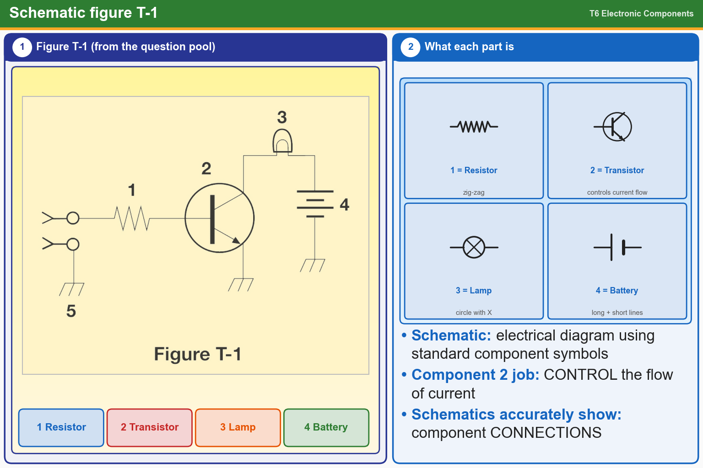

💡 Figure T-1: 1 resistor, 2 transistor, 3 lamp, 4 battery.
Tap an answer to check it.
T6C01
What is an electrical diagram using standard component symbols called?
✔A.Schematic
✘B.Connection chart
✘C.Flow chart
✘D.Instrumentation system
T6C02
What is component 1 in figure T-1?
✘A.Connector
✔B.Resistor
✘C.Transistor
✘D.Battery
T6C03
What is component 2 in figure T-1?
✔A.Transistor
✘B.Connector
✘C.Indicator lamp
✘D.Resistor
T6C04
What is component 3 in figure T-1?
✘A.Ground symbol
✘B.Transistor
✔C.Lamp
✘D.Resistor
T6C05
What is component 4 in figure T-1?
✘A.Resistor
✘B.Ground symbol
✘C.Transistor
✔D.Battery
T6D10
What is the function of component 2 in figure T-1?
✘A.Convert electrical energy into radio waves
✔B.Control the flow of current
✘C.Supply electrical energy
✘D.Give off light when current flows through it
T6C12
Which of the following is accurately represented in electrical schematics?
✘A.Wire lengths
✘B.Physical appearance of components
✔C.Component connections
✘D.All these choices are correct